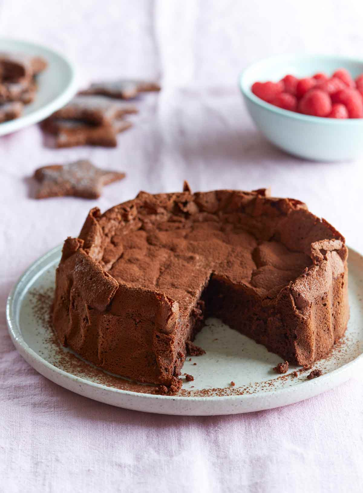

Chocolate Mousse Cake

About this cake
This decadent, melt in your mouth, chocolate cake is quick and easy to make, yet, will make your family and friends begging for more
The best way I can describe it, is to picture a marriage between a brownie outside and a fudgy chocolate center. Delicious!
Ingredients
- 200g chocolate bar
- 200g granulated sugar
- 200g unsalted butter
- 200g all purpose flour
- 4 eggs
Steps
- Grease a pan with butter and flour it, removing excess flour. Optionaly you can line it with parchment paper
- In a bain marie melt the chocolate with the butter
- Wisk together the sugar and the eggs, until creamy.
- Add the melted chocolate to the egg mixture, little by little, always mixing with a wisk.
- Add the flour and mix until homogenous.
- Bake in a pre-heated oven, 180 Celsius, for 11min. It will look very uncooked in the middle, but cooked on the edges. Let it cool slightly and flip it onto a plate.
Pairs very well with a scoop of vanilla ice cream.